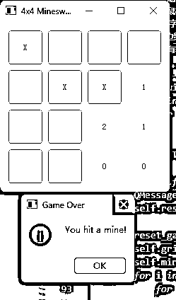
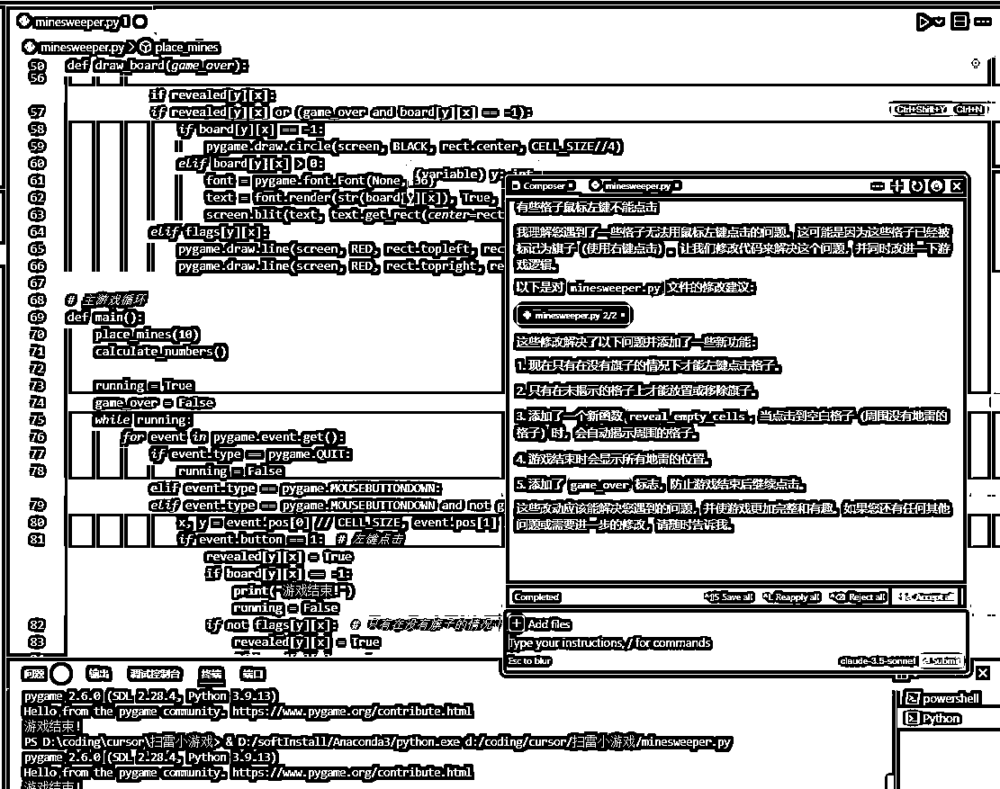
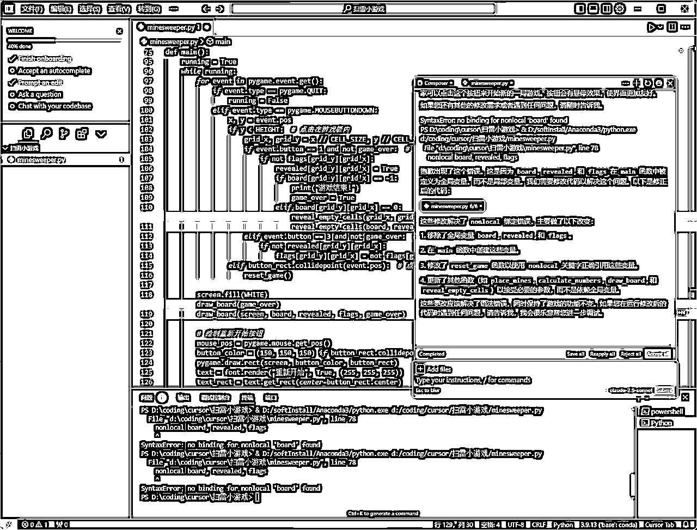
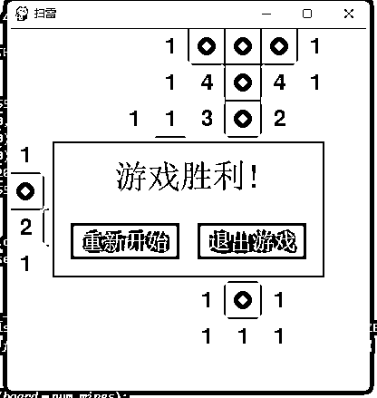
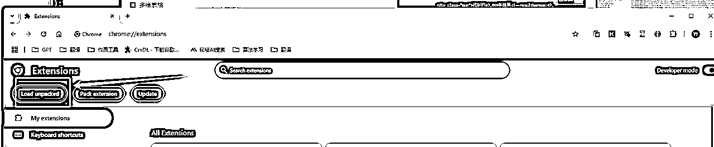
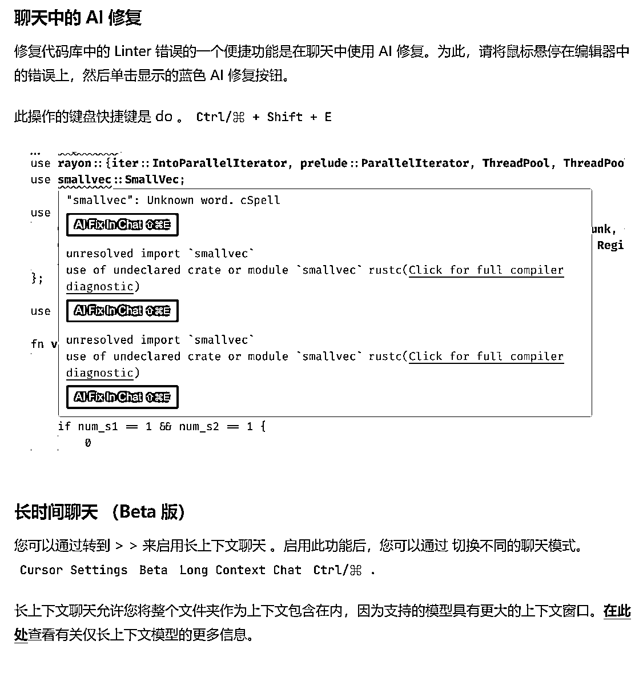

来源：https://qsbog43f8e.feishu.cn/docx/DKxxdrrzloJ7yexrMgicjhKlnXe
生财6月和9月航海都有AI编程，前段时间比较火的AI编程工具是Claude + Copilot，而最近，Cursor的消息更加多了起来。
尤其是8月20日，Cloudflare的总裁发推说他8岁的女儿使用cursor在45分钟内搭建了一个聊天机器人，这个帖子有257万的阅读。
好家伙、我直呼好家伙，这也太卷了吧。
咱们圈友都是赚钱的好手，那么通过cursor可以更高效的做铲子或磨刀（如开发插件、工具站、爬虫、公众号/小红书自动化工具、SEO等），提高各位赚钱的效率，下面我将向大家展示cursor的功能和用法。
正文分为3个部分，第一部分简单介绍下cursor的功能，第二部分通过4个案例展示如何快速的开发目标程序以及错误解决方法，第三部分是cursor的安装方法以及如何更高效的使用cursor。
对于使用过程中遇到的一些问题或者文档的问题，欢迎大家在本文档中留言或评论，我看到了就会回复。
cursor官网地址：https://www.cursor.com/
首先简单介绍一下cursor的功能。
Cursor的主要功能：
Cursor的适用人群：
以上期AI编程航海的第一个代码为例，输出“sheng cai you shu”，展示如何在cursor中使用AI。
（1）方法1
点击左上角文件，选择【新建文本文件】，右侧工作区就会出现一个Untitled-1的文件，Ctrl+S将这个文件保存一下，设置文件名（英文），文件类型选择python，这样就保存为.py文件啦（py为后缀，类似于文本文档的.txt markdown文档的.md PDF文件的.pdf）。
（2）方法2
在文件夹点击【新建文件夹】，按钮位置如下图，就会出现一个新的待命名的文件
新建的文件如下图，我们就可以输入【文件名+文件后缀】，输入“test.py”然后按回车键即可完成创建（文件名随意，根据自己的需求来设置即可），后缀就是根据语言来设置，例如：python语言为.py，c语言为.c，c++为.cpp
使用快捷键【Ctrl+K】弹出对话框，模型选择gpt-3.5或其他，claude-3.5-sonnet是cursor当前可用的最强大的模型。
在对话框里输入要求就可以生成代码，这里以上期AI编程的第一个代码为例，输出“sheng cai you shu”，下面就会生成代码。
然后点击右上角的▶运行代码，在底部窗口就会出现运行结果，底部窗口第一行是指运行的.py文件，第二行是输出结果。
十几年前，flybird那个飞着的小鸟爆了，后来又爆了微信跳一跳、2048、羊了个羊，而这些游戏均可以通过广告、充值复活等渠道赚取收益，那么我们也可以通过cursor来把自己的一些想法付诸于实践，制作一些游戏。
相信windows上的扫雷游戏大家都不陌生，规则并不复杂、但有一定的益智性，我就以这个游戏作为案例，向大家展示我开始使用cursor时如何复现这个游戏。
下面分为2个部分，1.1使用的是ChatGPT-3.5模型，借助了我一丢丢的开发经验，让AI使用Qt这个可视化编程工具来实现的，但是也可以说是硬莽了。1.2则使用了claude-3.5-sonnet，并没有限定python使用什么库，这时AI选择了pygame库。
下面开始展示。
第一次直接让它制作一个10*10的扫雷游戏，goudie，然后补充了“这个游戏有一个二维界面”，但是没有给出界面，想到了可以用Qt来制作界面，于是添加了Qt的这个命令，如下。
有了界面，但是鼠标点击后并没有反应，于是继续补充命令，并且简化了游戏。
运行游戏结果如下：
但是数字显示仍然有bug，因为没有考虑点击边缘格子时的情况，于是继续优化指令，指令如下：
请使用Qt制作一个4*4的扫雷游戏，这个游戏有一个二维界面，这个扫重游戏的要素如下: 1.地雷：在网格中随机分布的地雷，在这个4*4的游戏中，共存在3个随机分布的地雷。 2.扫雷：玩家使用鼠标左键来打开格子，若格子是地雷则游戏结束，若该格子不是地雷，则该格子会显示数字：1）当格子非边缘格子时，数字为该格子周围8个格子中地雷的数量，2）当格子为边缘格子时，检查4*4范围内周围格子中地雷的数量； 3.当玩家点击完所有非地雷格子，则玩家胜利，游戏结束。
这次效果比较满意，玩了几把暂时没出bug，下面是胜利的2个图和失败的1个图。

PS：我是有一点开发经验，开始使用cursor非常不熟练，所以是自己一点点优化命令的，包含选择Qt制作界面，而编程小白可以直接使用gpt或kimi等工具生成提示词然后再优化，也可以参考下面的案例。
不知道使用Qt或其他工具怎么办，能不能更加智能一点呢？
——完全可以
在电脑上创建一个文件夹，后面存放生成的代码，在打开cursor时选择Open a folder，选择刚才创建的“扫雷小游戏”文件夹即可。
依旧是Ctrl+K召唤AI，重复刚才最初的提问，使用提示词如下：
请制作一个10*10的扫雷游戏，这个游戏有一个二维界面，可以使用鼠标点击格子标记是否为地雷
然后AI回答我们可以使用python和pygame库来创建游戏，提示的扫雷游戏功能包含了一些基础要素，并且自动创建了一个minesweeper.py的代码文件，这个代码文件内容都是绿色的，说明我们还没有接受它的回答，这只是预览，点击右下角Accept all即可接受答案。
在运行前，注意AI的回答“要运行这个游戏，您需要安装Pygame库，可以使用以下命令安装：pip install pygame”，
点击cursor右上角的切换面板按钮，也可以使用快捷键Ctrl+J，切出命令窗口，在下面选择【终端】，然后复制刚才命令，按回车执行命令。
安装完Pygame库之后，点击右上角▶运行代码，开始试玩。
试玩过程中出现一些问题，例如有些格子点了没反应，有些格子会出现数字，有些格子点了后窗口会直接关闭。
于是继续提问让AI优化：“有些格子鼠标左键不能点击”，回答如下，代码中绿色为更新的代码，红色为将被删除的代码，点击Accept all，接受更新。

继续试玩，这次的游戏新功能更加完善了，点击空白格子会揭示附近没有地雷的格子，但是也会自动把靠近地雷的格子自动标记数字，降低了游戏游玩性，并且已揭示的格子和未揭示的格子均是白色，继续提问并优化。
游戏过程还不错，但是仍然有一个问题，游戏结束后不能快速重新开始，继续提问
看似优化了，然后运行时没有弹出游戏窗口，发现下面重点提示错误SyntaxError，把错误信息复制给AI，它会给我们解决问题。

好吧，仍然没有重新开始按钮，精细化提问，为了节省大家的时间，我把提问过程丢在下面，只给出最终版本。
游戏结束后，请弹出两个按钮，分别为关闭游戏和重新开始；
这两个按钮没有显示；
这两个按钮请以弹窗的形式表现，并且以中文字显示；
使用鼠标右键全部标记完地雷后，若标记正确，则弹出游戏胜利。右键标记改为放置旗帜；
去掉游戏窗口的空白；
无法加载字体文件，使用系统默认字体；
不要一直提示无法加载字体文件: d:\coding\cursor\扫雷小游戏\NotoSansSC-Regular.ttf；
重新开始和退出游戏字体过大，超出按钮范围了；
不要一直提示无法加载字体文件: d:\coding\cursor\扫雷小游戏\NotoSansSC-Regular.ttf

至此，游戏完成。
从去年开始，公众号爆文项目非常火爆，不少圈友在这个项目上拿到了成绩；
在进行公众号写作时，大部分人绕不过的一点就是寻找对标文章，建立素材库；
而在寻找对标文章时，有的人是手动一篇一篇的搜索阅读，也有圈友更进一步的想到了卖铲子，通过爬取10W+爆文，然后制作素材库出售给流量主。
而现在，通过cursor，几乎人人都可以根据自己的目标去编写爬虫，一方面可以直接节省了这笔费用，另一方面可以通过梳理爬虫需求来进一步明确自己的内容前进方向。
此外，小红书帖子、抖音爆款等各个内容，均可以编写相应的爬虫工具来快速获取对标爆款素材库。
下面就来演示一下爬虫制作方法。
直接上命令
写一个爬虫程序，按下面的要求在我的 windows 电脑上帮我抓取微信公众号文章。
1.使用 python3 和最新版的 selenium
2.目标网站:https://weixin.sogou.com/
3.输入关键字[ AI]，点击[ 搜文章 ]按钮
4.爬取内容: 爬取标题、摘要、链接、来源
5.爬取后的内容保存到Excel文件中，Excel文件命名为AI微信 时间
6.爬取前5页，每爬完1页休眠5s
请给我完整可运行的程序，让我看到浏览器中操作的过程，并指导我安装程序依赖的所有库。
你可以先执行步骤 2 和步骤 3了解网页的结构，然后再生成代码。
下面是回答，先复制命令到终端安装必要的库。
pip install selenium pandas openpyxl webdriver-manager
请创建相关代码文件以及生成代码
现在能保存了，但是文章数量太少，并且信息可以进一步完善。

最终解决的提问如下：
爬取成功，然后再修改为爬取前5页的文章，这次爬取了48篇文章。

去年，鱼丸邀请圈友熊猫Jay分享了如何使用ChatGPT开发谷歌插件，让没有开发经验的人也可以制作谷歌插件。
经过一年的技术发展，现在cursor大幅度简化了流程，可以自动创建所有的代码文件以及代码，并且在cursor编辑器中更新和调试代码。
下面以一个“为当前网页生成二维码”的小插件为例，向大家演示这个过程。
先创建文件夹，然后直接输命令如下：
请帮我创建在chrome浏览器上，打开任意网页时，右下角展示当前网站二维码的插件，展示的二维码应该有以下几个特性：
1、二维码大小为256*256；
2、二维码的中间部分获取展示当前网站的logo；
3、二维码的下方，分两行分别展示网站名称和网页标题，网页标题要加粗，最多展示15个字。
当前有个问题，缺少插件图标，而claude-3.5-sonnet无法直接生成图片，所以需要我们自己下载图标，我随便截图保存到对应目录当图标了。

加载插件后报错，提示This extension may soon no longer be supported
没关系，AI会出手，复制提示信息，让AI去解决，更新后重新load插件，这次成功了。
随便找个网站测试一下，这里我选择的是百度翻译，用手机微信扫码确实能访问。
二维码太抢眼了，优化：
进一步优化，默认情况下不打开二维码，而只在右下角展示网站的小logo，当用户点击时才展开二维码，而且也可以重新隐藏二维码切换为只显示小logo
在插件管理页面，点击"reload"可以重新加载更新后的插件，
回到百度翻译，刷新页面，nice。
AI工具站是提供特定工具或服务的网站，例如搜索引擎、在线存储空间或翻译工具。
2024年3月航海，哥飞等教练带领大家进行了出海第一站航海，向大家介绍了出海网站、工具站的前景、变现方式以及如何制作英文工具站，当时哥飞教练非常耐心细致的讲授了如何制作工具站以及推广要点，不过对于一些编程能力薄弱的人，开发工具站仍然是是有一定门槛的，而使用Cursor进行AI编程可以大幅度的降低这个门槛。
下面截图是3月航海手册对工具站的分类，在AI领域案例中，@MoneyHunter 介绍了一个ai导航站，当时流量是比较大的，遗憾的是现在这个网站已经无法访问，不过现在仍然有其他的AI工具导航站存活，而且规模很庞大，这里我就以一个简易版的AI工具导航站来向大家展示一下如何制作一个简单的AI工具导航站。
下面直接提问
帮我制作一个网站，这个网站是AI工具导航站，在这个网站上按类别将各种AI网站汇总分类，显示各个AI工具的名称和logo，用户可以通过鼠标点击AI工具的名称和logo来访问对应的AI工具网站。
先使用10和AI工具制作第一版的AI工具导航站
生成代码后，不知道怎么发布网站，于是继续问AI
太复杂了，简化为本地的服务
请将该网站修改为本地发布的服务
运行代码，然后根据下面终端窗口的提升访问地址： http://localhost:8000
能访问网页了，但是有错误，没有达到预期目标，把错误信息复制给AI
127.0.0.1 - - [05/Sep/2024 11:57:35] "GET / HTTP/1.1" 200 -
127.0.0.1 - - [05/Sep/2024 11:57:35] "GET /styles.css HTTP/1.1" 200 -
127.0.0.1 - - [05/Sep/2024 11:57:37] code 404, message File not found
127.0.0.1 - - [05/Sep/2024 11:57:37] "GET /favicon.ico HTTP/1.1" 404 -
网页只有AI工具导航几个字，没有其他信息
先接受代码更新，测试一下。
有了4个网站，但是仍然有错误，比如图标、数量，注意到AI刚才的回答“在浏览器的开发者工具中查看控制台，看是否有任何错误信息”，回到浏览器切出控制台，查看错误信息，并把错误信息发送给AI（Ctrl+A一股脑全发过去）。
更新后的导航站如下，看起来不错，点击Claude试试，有一点点完美啦，哈哈哈哈

但是AI工具数量太少啦，也不是刚才提问的10个，让它加：
非常好，但是只有4个AI工具，请扩充为20个
更新后的数量上来了，但是工具及类别不对，
这些AI工具的类别不对，请根据AI工具主流的类别进行划分
突然意识到，我国产大模型怎么没有，不能忍>
请补充中国相关的AI工具
文心一言、通义千问都有啦，不过大kimi竟然没有，就这样啦，功能演示完毕。
官网地址：https://www.cursor.com/
先点击右上角的Download下载安装包到本地；
下载过程中点击右上角【Sign In】按钮进入登录页面，可以选择用谷歌或者github登录，也可以点击登录页面最下面的【Sign up】进行账号注册，如下图左侧所示，下图右侧是注册页面，First name和Last name随便填，不重要。
注册完成后，安装包也下载完成了，双击【Cursor Setup .exe】安装即可。
安装后后在客户端点击Sign In然后跳转到登录页面，输入刚才注册的账号密码就可以，编辑器风格默认VS code，开发大佬自行选择Sublime或其他，不太熟悉编程的用默认即可。
和ChatGPT一样，Cursor有免费版和Pro版（20刀），只要有邮箱就可以注册，而免费版可以白嫖2周Pro（所以你懂，但是不提倡圈友打信息差去卖给那些不会注册的人）。
2.1 安装中文插件
在Cursor窗口左侧点击Extensions按钮，在搜索框输入Chinese，然后按需安装/Install 简体或繁体中文，安装完成后点击Restart重启Cursor就可以切换中文啦。

2.2 安装编译插件——python版
还是Extensions位置，在搜索框输入python，然后和刚才安装Chinese插件的方法一样，当前是>3.7版本的。除了基础的python，还有很多python相关的插件，以及C、C++等语言，后面自行探索即可。
在cursor右上角点击设置按钮，然后在Features中把Composer设为enabled，这里编程会更加自动化；
在Beta中，把LONG CONTEXT CHAR（BETA）设为enabled，这样就可以支持200K的长文本啦。
帮助文档地址，英文观看更佳：https://docs.cursor.com/get-started/migrate-from-vscode
cursor右上角Toggle AI Pane（Ctrl+Alt+B）切出。

在cursor窗口中，右上角设置->General->Rules for AI可以自定义一些AI规则
python
def fibonacci(n):
if n <= 1:
return n
else:
return fibonacci(n-1) + fibonacci(n-2)
以上仅为一个简单的科普演示，大家做爬虫、做工具站、科学计算、绘图等均可自己定制更高级的功能，也可以导入相关库以及使用conda管理python。
欢迎大家交流链接。